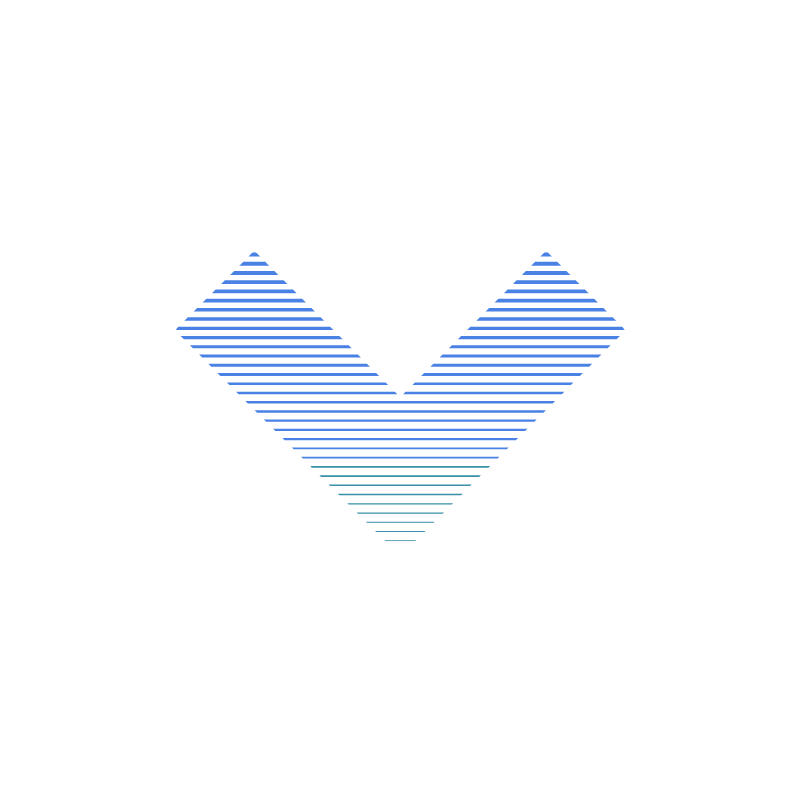

Welcome to the Web Dvelopment Servies Hub (</WDS>).
We'll grow your business online.
Scale Up Online
with </WDS>
With 5.4 billion Google searches per day, an online presense will greatly benefit your business

Why Work With </WDS>
At </WDS> we pride ourselves on making unique custom sites for your business
With 14 years of development experience, we are ready to take on any project.
</WDS> Project Highlights


The </WDS> Approach
Desktop Development
Desktop development for websites, landing pages, and web applications, with SEO optimization.

Mobile Development
50% of browser users use their cellphones, we make it accessible and easy for them.